Roaming CompanyAll your cards gain Pathfinder. Your Active cards also count as being in your Hand for the purposes of Journeying.
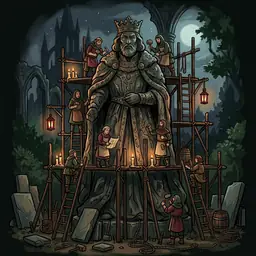
Statue WrightsGain 1 influence if you have a card in any Council. If you have a card in each of the three Councils you may discard this card to gain 2 more influence.
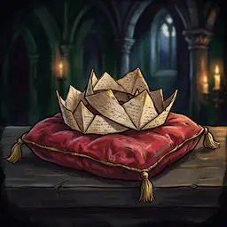
Paper DiademsIf you are first on the Order Track, your Followers gain +1 Vote; if you are not first, they gain +2 Votes.Veiled PatronBold: Bold: Discard your Bidding card; place this card in your Supply. Passive: when resolving Attrition, instead of reducing Hand Size you may/must discard this card (it absorbs one Attrition).Sentinel Towers+5 Strength to your Bidding card and Occupying cards. When you are the first to resolve your Bid, gain 1 influence. Bold: you may not steal Kingdom Cards.
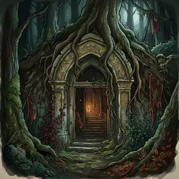
Buried HallBurn one of your Tactics to gain 1 lore; if that Tactic was Unexhausted gain 2 more lore.The LighthouseBold: Bold: Discard your Bidding card. Acquire the Site of Power card with the lowest (or tied lowest) Lore cost. Discard this card.Vast ArchiveYour Faction Cards with exactly 1 printed Lore gain +1 Lore.
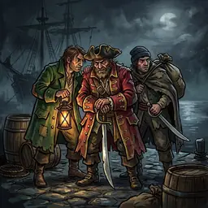
Cutthroat CrewWhen you attempt to steal a Kingdom Card, add +3 Strength to the stealing card. Whenever a Kingdom Card is stolen, gain 1 influence; if an opponent steals THIS card, they gain that influence instead.
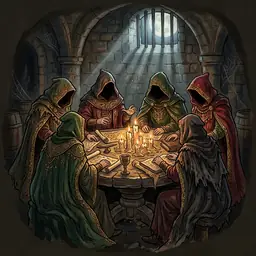
Shadow AssemblyBold: Bold: Discard your Bidding card; place this card on a Region. Action: Govern with one of your Active cards in this Region.
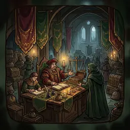
Trade League HallBold: Bold: Discard your Bidding card; place this card on a Location. Whenever any player claims this Location's Reward, this card's owner gains 1 influence.
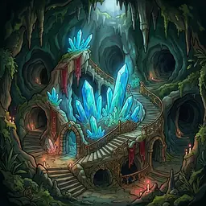
Crystal WarrensWhenever you Journey with a card that has Pathfinder, gain 1 influence and 1 additional lore.Faraway HermitageIf you have no lore in your Supply, gain 1 influence; otherwise gain 1 lore.
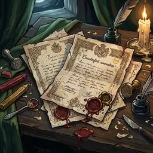
Counterfeit AmnestiesMove any one card from your Discard Pile to your Hand.
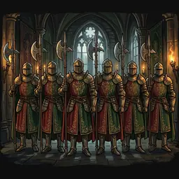
Honour Guard of SixesYou may activate your Favour even if you do not hold it. If you do hold it you may activate it twice; each activation is a separate Action.
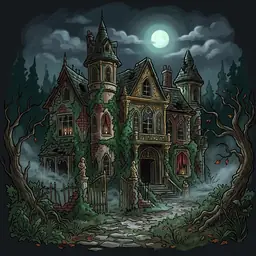
Derelict ManorDiscard one of your cards from a Council to increase your Hand Size by one. Discard this card.
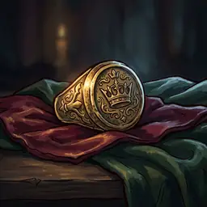
Monarch's Seal-RingOn acquire: increase Hand Size by 1; when you no longer Occupy this card decrease Hand Size by 1. Whenever you win a Clash in a Region where you have an Active Heir, gain 1 influence.
Secrets (Kingdom cards) 17
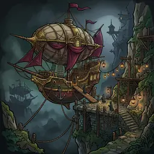
Sky HarbourWhenever any of your cards are removed from a Council you may move them to your Hand. Whenever you Journey with any of your cards you may move it to the bottom of your Deck.
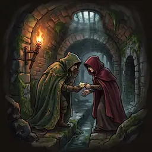
Rumours UndergroundChoose any number of players; each moves all cards in their Hand to the bottom of their Deck (any order) then draws that many cards.Cog-Wing CouriersSwap a card in your Hand with one of your cards that is in a Council or Occupying a Kingdom Card. Repeat the spring Action of this card.Tome of Real NamesReveal your Hand. Return to owners' Hands all opponents' cards in the current Clash that have the same printed Strength and/or Archetype as a card you revealed. Discard this card.
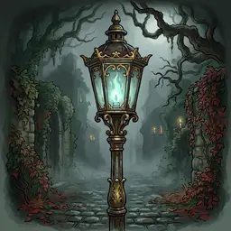
Dead LampMove any number of your Supporters in the current Region to either another unresolved Region or your Supply (Player Board).Tavern KeeperChoose a Region; look at all face-down cards there. You may choose two of your face-down cards next to any Regions and swap their positions.
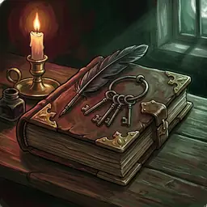
Chamberlain's LedgerMove one of your Active cards into a Council. Discard any number of cards in that Council. Discard this card.The FerrymanSwap a card in your Hand with one of your cards in the Lost Pile.Crone of AutumnBurn this card. Then acquire up to two cards from the Great Road and Occupy them with cards from your Hand.
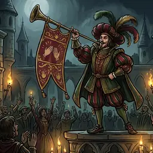
Herald of ApplauseWhen adjusting the Order Track at the Start of the Year, you choose the position of each marker on the track.Wax PretenderOnce per Round you may activate an opponent's Favour during its associated Step. If that opponent currently holds the Favour disc, do not rotate it.Mirror of Many FacesChoose one of your Active cards in the current Clash. For the rest of the Round it becomes a copy of any card in the Lost Pile, except its Strength stays unchanged.Sirens' MereChoose a Location. Move any number of Heralds to that Location. Discard this card.Dawn-Blue ChimeMove all your cards from the Lost Pile to the top or bottom of your Deck, in any order. Discard this card.
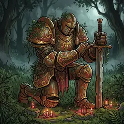
Rusted ColossusMove one of your Active cards to your Hand.
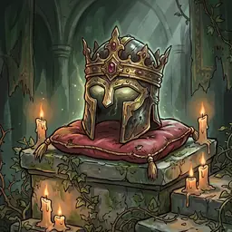
Dead King's HelmWhenever one of your cards is Eliminated you may move it to your Hand.Dead King's GazeBold: Bold: Discard your Bidding card; place this card in your Supply. When acquiring a card from the Great Road you may look at the top two face-down Kingdom Deck cards and treat them as face-up.
Oaths (Kingdom cards) 17
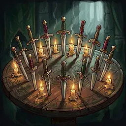
Knives' FellowshipYour Heirs gain Deadly (Night) and Retreat (Day). When your Heir Eliminates one or more cards, gain 1 influence. If any Active opponent Follower is in a Clash with your Heir, Eliminate your Heir.
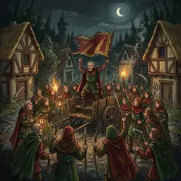
Village MusterYour Followers/Cavalry gain Deploy (1) (Autumn). Move a Follower from your Discard Pile to your Hand.
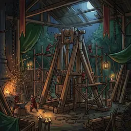
Siege WorkshopYour cards with Deploy(1) (Autumn) also gain Deploy(1) as a Spring action. Place 1 influence token on one of your Active cards that has Deploy.
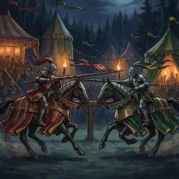
Grand JoustAll players choose a card from Hand and place it face-down; reveal. 1) All cards with the same Strength are discarded. 2) The remaining card with highest Strength wins. 3) Return non-discarded cards to Hands. The winner claims any Location Reward. Discard this card.
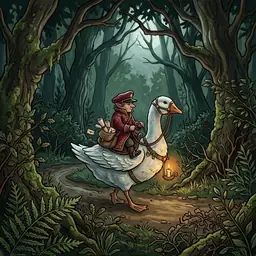
Goose-Rider PostYour Heirs gain Flank (Day).Concealed WaysSwap one of your Active cards in the current Clash with one of your cards that is in a Council or Occupying a Kingdom Card.
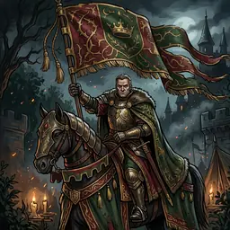
Banner MarshalYour Heirs gain Deploy (1) (Autumn). If your Heir is Eliminated, move it to your Hand and discard this card.
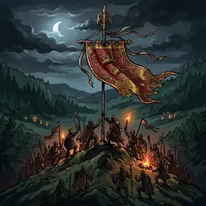
Rally StandardMove up to two of your Supporters from the Map and/or Lost Pile to your Player Board.
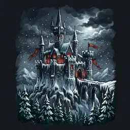
Frozen BastionBold: Bold: Discard your Bidding card; place this card on a Region. All opponents' total Strength in this Region is halved (rounded up). Discard this card.
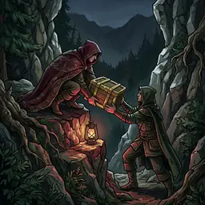
Contraband GapChoose one of your Active cards in the current Clash; it gains Retreat until end of Clash. When that card Retreats you may Journey with it.Hunting-Horn of the SwansChoose one of your Active cards in the current Clash; it gains Ambush until end of Clash.
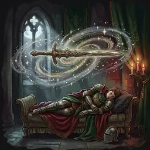
Blade That DreamedGain +5 Strength in the current Clash. Discard this card and its Occupying card.
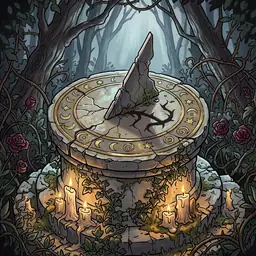
Broken GnomonPlace this card on a Region and discard your Occupying card. Skip the Day and Night steps of all Clashes in this card's Region (for the Round). Discard this card.Oddment BandUnexhaust one of your Tactics (follow any SETUP text on it). Discard this card and its Occupying card.
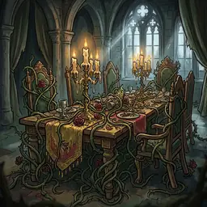
Feast of ThornsBold: Bold: Discard your Bidding card; place this card on a Region. Treat any printed information on opponents' cards in this Region as blank, except Strength and Archetype. Discard this card.Dead King's LanceChoose one of your Active cards in the current Clash; it gains Deadly until end of Clash. Discard this card and its Occupying card.
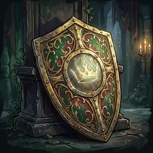
Dead King's AegisChoose one of your Active cards in the current Clash; it gains Invulnerable until end of Clash. Discard this card.